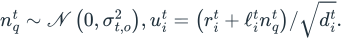
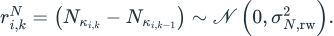

整体概括
输入是原始观测，输出是全局参考下的位姿
这是一套城市车辆的紧耦合 RTK—双目视觉—惯性定位系统，而不是单独的视觉网络。流动站与基站的原始观测形成双差码和载波因子，多普勒约束速度；IMU 连接相邻状态，双目观测连接持久路标。后端同时优化导航状态、路标、浮点模糊度及可选的公共参考星误差变量，经验证的整数信息才反馈到图中。
对照原文证据
Rover and base Global Navigation Satellite Systems observations undergo preprocessing, cycle-slip detection, and pivot selection before Double-Differenced code and phase factors are constructed; Doppler observations provide velocity constraints.The graph jointly estimates navigation states, landmarks, float ambiguities, and optional pivot-error and stationary-anchor variables.重点看大误差与错误传播，不只看平均误差
阅读这篇文章最有价值的主线，是把不可靠信息的风险拆成进入图、被图采用、沿时间传播三个环节，再分别安排视觉准入、鲁棒权重和模糊度连接。作者并没有得到某种配置在所有指标上一致最优的结论；latent 的主要优势集中在该测试中的最坏误差和已采用固定解的准确性，不能把方法名称直接等同于整体最优。
对照原文证据
It combines a semantic-aware learned stereo frontend, hybrid ambiguity continuation, and correlation-preserving robust GNSS estimation to limit the admission, influence, and temporal propagation of unreliable measurements.In this evaluation, the latent-pivot configuration therefore accompany improved worst-case and used-fix accuracy, rather than uniformly better average accuracy.Research gap
紧耦合不自动意味着鲁棒
作者指出，坏的 GNSS 因子、错误视觉路标或错误延续的载波模糊度一旦进入固定滞后估计器，影响可能通过状态与边缘化先验继续存在。因此，研究缺口不是再增加一种传感器，而是在强耦合的信息利用与错误信息的持续污染之间做控制。这是作者对本文动机的界定，并不代表本站已经完成所有城市定位方法的查新。
对照原文证据
Tightly coupling raw measurements in Factor Graph Optimization improves information use, but once a corrupted Global Navigation Satellite Systems factor, a false visual landmark, or a wrongly continued carrier-phase ambiguity enters the estimator, its influence can persist through states and marginalization.双差相关性与细粒度鲁棒权重需要同时处理
共用参考星的双差残差并不独立。整批使用完整协方差虽然保留了相关性，却可能因为其中一个坏观测而降低整批好观测的权重；先白化再分别加权也不等于对原始每颗候选星分别加权，因为一个白化分量可能混合多个原始残差。本文因此比较整批、白化分量和条件候选残差三个权重层级，而不是简单声称逐星剔除总是更好。
对照原文证据
A standard batch formulation uses the full covariance and applies one robust loss to the batch Mahalanobis norm. This accounts for the correlation but assigns one robust weight to the entire batch, so an outlier can downweight otherwise clean observations.However, because \mathbf{L}_{q}^{t} is generally dense, each whitened component can contain contributions from multiple original candidate residuals; an outlier can therefore affect component weights [ 13 ] .算法主线

原图由 arXiv 加载；若未显示，可打开下方原图链接。
跟着原图读
- 先看上排：输入不只是单张左图
蓝框展示相邻时刻的左右图像；校正后，绿色模块分别生成可用区域掩膜。语义筛选发生在前端准入阶段，目的是减少不可靠观测，而不是输出最终车辆位姿。
- 再看紫框：立体匹配和时间匹配分工不同
同一时刻左右图像提供立体几何，跨时刻左图匹配维持轨迹。图例中绿色和蓝色线分别表示立体与时间匹配，黄色点为关键点，绿色点为路标，不能把所有连线当成时间轨迹。
- 最后看红框：网络匹配还要接受几何审查
图中列出 Stereo Geometry、PnP/RANSAC 和 χ² Gate。正文进一步说明 PnP 支持统计影响视觉协方差，PnP 与 IMU 运动一致性影响整帧准入；因此“匹配成功”不等于“立刻成为持久路标”。
这是一张前端工作流，不是完整因子图或网络训练配置。它没有单独证明每个学习组件贡献多少，也不能据图推断已进行端到端训练或已达到特定运行帧率。
前端先筛选，再让特征成为持久路标
先校正同步双目图像，再用 SegFormer 分别给左右图像生成语义掩膜，排除天空、植被、行人和车辆等不可靠区域，并保留保守的边界缓冲。SuperPoint 提取关键点和描述子，LightGlue 完成立体与时间匹配。匹配还要经过几何检查与轨迹成熟条件，而不是把网络输出不加选择地送入优化器；这里的学习模型承担前端组件角色，不是端到端学习整个 RTK 后端。
对照原文证据
SegFormer [ 19 ] independently segments both views to mask semantically unreliable classes, including sky, vegetation, people, and vehicles. Mask erosion and additional buffers around rejected regions provide conservative object-boundary margins.LightGlue [ 21 ] performs both stereo and temporal matching.A track becomes eligible for landmark initialization after at least n_{\min} observations.几何一致性影响观测协方差和整帧准入
双目匹配检查极线、垂直视差和正视差，再三角化并删除几何不良或过远的点；时间匹配通过 PnP/RANSAC 检查。PnP 的支持统计用于调整视觉因子协方差，而 PnP 与 IMU 预测运动的一致性进一步决定是否新建路标、复用路标或拒绝该帧。前端还可提供停驶线索，但其作用不等同于额外加入一条未经验证的真值位姿。
对照原文证据
Stereo matches undergo match-score and geometric checks, including epipolar, vertical-disparity, and positive-disparity tests, before triangulation [ 27 ] .The PnP support statistics scale the stereo-factor covariance.Separately, consistency between \Delta\widehat{\mathbf{T}}^{\mathrm{PnP}}_{k-1,k} and the IMU-predicted motion over the same interval controls visual-factor admission, which determines whether the Factor Graph Optimization initializes new landmarks, reuses existing landmarks, or rejects the frame.latent-pivot 将共享噪声显式放进图中
batch 对整批白化残差给一个权重，scalar 对白化后的分量分别加权，latent 则为每批观测引入局部的参考星误差变量，再对条件化后的候选残差分别加权。在单位鲁棒权重和固定模型方差条件下，三者恢复相同的完整协方差高斯代价。差异在于异常值被哪一层的权重抑制，而不是某种配置直接取消了双差的公共参考星相关性。
对照原文证据
Marginalizing n_{q}^{t} recovers eqn. ( 18 ), whereas, under the assumed Gaussian model, conditioning on it yields independent scalar residuals tied to the original candidates.With fixed model variances and unit robust weights, all three configurations recover the same full-covariance Gaussian cost:Thus, all three configurations retain the nominal shared-pivot dependence; they differ in whether robust weights act on the batch Mahalanobis norm, whitened components, or conditional candidate residuals.模糊度只在连续性可验证的短弧内精确共享
系统将精确共享限制在最多 H=3 个连续 GNSS 历元的短弧内；继续可靠跟踪时，新弧通过零变化随机游走因子软连接。检测到周跳、参考星变化或无法验证连续性时，启用独立模糊度状态，并不必然丢弃该载波观测。整数候选还须通过自举成功率、浮点位姿协方差和位置创新检查；验证失败时保留浮点解，不把整数约束硬灌回图。
对照原文证据
If continuity remains verified beyond the arc, a new ambiguity state is introduced and connected to the preceding state by a soft zero-change random-walk factor. When continuity is broken or cannot be verified, a new ambiguity state is initialized independently.This preserves strong short-term ambiguity coupling while limiting the duration of exact state sharing. We use H=3 .A detected slip, pivot change, or single-frequency measurement does not necessarily discard the Double-Differenced phase; instead, it prevents that measurement from inheriting a Double-Differenced ambiguity state from the preceding epoch [ 32 ] .If validation fails, the current float estimate is retained without adding integer priors from that hypothesis.关键公式
先理解相关结构，再理解权重位置
下方先用原文协方差式说明：同一参考星的误差同时进入多个双差残差，非对角相关项不是可随意删除的细节。随后看 latent 条件残差，理解显式共享变量为什么允许权重落回各个候选残差。这里的独立性依赖所假设的高斯条件模型；它不是现实城市多路径天然独立的证明，也不是任意重加权后都与原高斯模型严格等价。
对照原文证据
Because differencing creates correlations, the residuals sharing pivot o have covarianceMarginalizing n_{q}^{t} recovers eqn. ( 18 ), whereas, under the assumed Gaussian model, conditioning on it yields independent scalar residuals tied to the original candidates.With fixed model variances and unit robust weights, all three configurations recover the same full-covariance Gaussian cost:鲁棒权重、跨弧连接和整数反馈是不同控制环节
DCS 约束的是当前残差在优化中的信息权重；随机游走因子约束的是可靠短弧之间的模糊度变化；位置修正式则用位置与模糊度的交叉协方差预估固定候选带来的位移。它们不能相互替代：降低观测权重不能证明没有周跳，整数搜索得到候选也不意味着应该接受。实现时应分别记录残差尺度、状态连接决策和固定验证结果。
对照原文证据
Weights are recomputed at each relinearization and held fixed during the local least-squares solve. Latent pivot-error priors remain Gaussian.This preserves strong short-term ambiguity coupling while limiting the duration of exact state sharing.The candidate is accepted only if P_{\mathrm{B}}>0.86 , the float pose covariance passes its acceptance gate, and \delta\mathbf{p}_{\mathrm{fix}} satisfies the designed covariance and position innovation bounds.共享参考星使双差残差具有非零相关项
同一观测批次中，对角项包含候选星与参考星方差；不同候选之间也保留共同参考星的方差贡献。码与以距离表示的相位残差使用距离平方量纲，多普勒距离率残差使用距离率平方量纲，应分别建模。
符号与实现提醒
- Σqᵗ
- 观测类型 t、批次 q 的双差残差协方差矩阵。
- σ²t,i / σ²t,o
- 候选观测与共享参考星观测各自的模型方差。
- I[i=j]
- 对角指示项；候选方差只进入对应对角元，共享参考星方差进入所有相关元。
该结构依赖文中单观测噪声模型与差分方式；不能将电离层残差、多路径或其他跨星相关误差在未经检查时统统吸收到独立候选方差中。
将参考星误差显式作为潜变量，再标准化候选残差

共享的参考星误差变量带高斯先验；给定它以后，各候选残差按不含参考星贡献的方差标准化。u 是无量纲量，便于分别施加鲁棒权重；把公共潜变量积分掉，才恢复名义共享协方差结构。
符号与实现提醒
- nqᵗ
- 该时刻该观测批次共享的参考星误差变量，不是整数模糊度。
- riᵗ
- 当前优化迭代中的原始候选—参考星残差。
- ℓiᵗ
- 参考星误差对候选残差的系数，具体值按原文差分模型设置。
- diᵗ / uiᵗ
- 不含参考星贡献的候选方差，以及标准化后的条件残差。
保留公共变量及其先验才是相关性处理的一部分。不能引入潜变量后删除先验，或将条件高斯独立性直接推广为真实异常观测之间的独立性。
DCS 缩放的是信息权重，不是以米计的原始残差
较小的归一化残差保留名义信息，大残差的权重下降。z 在 batch、scalar、latent 下分别对应整批范数、白化分量和条件候选残差，因此相同权重函数并不表示相同的异常值作用范围。
符号与实现提醒
- z
- 所选配置下的无量纲鲁棒残差参数，而非未经白化的伪距误差。
- cDCS
- 正的调节参数，作用于归一化残差尺度。
- wDCS
- 局部加权最小二乘中的信息权重；原式保留外层平方。
残差形式的求解器通常需要平方根信息权重，不能不核对代价定义就把信息权重直接乘到残差上。权重在重线性化时更新，在一次局部求解中固定。
可靠短弧之间用随机游走软连接

相邻短弧的模糊度差以零变化为均值，但保留有限方差；这比无限延长完全相同的状态共享更柔和。它只用于符合连续性条件的弧边界，连续性破坏或不可验证时应独立初始化。
符号与实现提醒
- Nκi,k
- 当前观测所关联的双差模糊度图节点，模糊度以周计。
- rN
- 相邻模糊度状态之差，而非载波观测残差。
- σ²N,rw
- 跨弧随机游走方差，以周平方计；决定软连接强度。
不能在已检测周跳后仍用强零变化约束连接两段；也不能仅靠调大随机游走方差替代周跳检测、参考星切换管理与单频连续性判断。
用交叉协方差检查整数候选可能带来的位置改变量
将整数候选与浮点模糊度之差，经模糊度协方差和位置—模糊度交叉协方差映射为一阶位置修正。位置以距离计、模糊度以周计时，映射后的结果具有距离单位，可与设计的位置创新边界比较。
符号与实现提醒
- N̂ / Ň
- 浮点模糊度估计与整数最小二乘候选。
- QNN
- 参与固定的模糊度联合协方差，不能只保留对角。
- QpN
- 位置与模糊度的交叉协方差。
- δpfix
- 接受该候选所暗示的一阶位置改变量。
这不是单独充分的固定验收条件，也不保证整数正确。原文还检查自举成功率、浮点位姿协方差及相应创新边界；本站未运行整数固定或复现实验。
实验怎么做
真实城市路线，但不是多城市泛化实验
作者使用公开 TEX-CUP 数据，删除开始 7 分钟和结束 9 分钟的开阔地停车段，避免易定位时段主导统计。评估包含 4040 个 GNSS 历元、约 20 km 路线；作者将环境约分为 50% 深城市、40% 轻城市和 10% 开阔路段。数据覆盖高楼、立交和树荫，但这仍是一条选定路线的系统评测，不能据此宣称跨城市、跨接收机均成立。
对照原文证据
We exclude the initial 7 and final 9 minutes, when the vehicle is parked in an open-sky lot, to prevent these open-sky intervals from dominating the statistics. The evaluated route contains 4040 GNSS epochs and covers approximately 20 km through the west campus of The UT Austin and downtown Austin.It includes overpasses, high-rise buildings, large structures, and dense foliage, with approximately 50% deep-urban, 40% light-urban, and 10% open-sky driving.传感器频率与窗口长度是复现条件的一部分
评估使用 1 Hz 的流动站与基站 GNSS 观测，配合 100 Hz IMU 和 10 Hz 双目图像，图像裁切为 2048×732 像素；相机标定与天线—IMU 杆臂参数参与处理。后端采用 GTSAM，固定滞后窗口为 6 s。DCS 参数为 1.5，Huber 阈值为 1.345；这些数值是该实验设置，不应不经标定就迁移为其他硬件或电离层场景的通用参数。
对照原文证据
Rover and base Septentrio receivers provide 1-Hz GPS L1/L2, Galileo E1/E5b, and BeiDou B1I observations.A 100-Hz LORD MicroStrain IMU and synchronized 10-Hz Basler stereo images cropped to 2048\!\times\!732 pixels are used. Calibrated camera parameters and the antenna–IMU lever arm are applied.SeA-RVINS uses GTSAM [ 36 ] for the Factor Graph Optimization solver with a 6-s fixed lag. We use c_{\mathrm{DCS}}=1.5 for Dynamic Covariance Scaling and a Huber threshold of 1.345 throughout.外部基线是系统级参考，不都是受控消融
作者比较公开系统与 SeA-RVINS 内部的鲁棒配置，但外部方法使用各自支持的观测配置：有的只有流动站，有的具备流动站与基站，有的单目、有的双目。所有松耦合方法共用 RTKLIB-EX 位置输入，且部分公开实现经过修复或适配。因此，表格适合比较这次评估下的系统表现，不足以独立归因于紧耦合、某个视觉模型或某个单独模块。
对照原文证据
The public methods are evaluated using the measurement configurations they support. RTK-capable methods use rover and base observations, whereas GVINS and InGVIO use rover-only and are therefore included as system-level references rather than controlled RTK-visual-inertial comparisons.GVINS and GICI-RRR also required estimator adaptations. RTKLIB-EX and GICI-RTK are used without source modifications.可用率、全历元达标率和条件误差不能混读
所有输出先换算到 GNSS 天线位置，再与同一评估区间的真值比较。可用率与距离阈值达标比例的统计分母涉及全部评估历元，缺解被视为未达标；RMSE、最大误差和 P95 只对有解历元计算。固定解表又进一步只统计实际采用整数约束的历元。比较不同方法时必须先对齐这些分母，不能用少量固定历元的低误差代替全路线性能。
对照原文证据
The percentages below 1.0 and 1.5 m and the curves in Fig. 3 are computed over all epochs, with missing solutions counted as unsuccessful. Root Mean Square Error, maximum error, and 95th-percentile error (P95) are computed only over epochs with valid solutions.Fix rate is the fraction of evaluation epochs that are used-fix epochs, and the associated horizontal-error statistics are computed only over those epochs.提升与证据
平均误差相近，最坏误差和分位数各有优胜
在这条评估路线中，batch 的水平 RMSE 最低，为 0.38 m；scalar 的水平 P95 最低，为 0.86 m；latent 的最大水平误差和最大三维误差最低，分别为 1.60 m 与 4.04 m。这个比较说明鲁棒配置的价值取决于关注平均精度、尾部风险还是固定解质量，不能将 latent 简写为全面优于另两种配置。
对照原文证据
Batch gives the lowest horizontal RMSE (0.38 m), scalar has the lowest horizontal P95 (0.86 m), and latent has the lowest maximum horizontal and 3-D errors (1.60 and 4.04 m).全路线达标比例高，但可用不等于安全可信
表中 latent 配置的水平 RMSE 为 0.39 m，最大误差为 1.60 m，全部历元中低于 1.0 m 和 1.5 m 的比例分别为 96.16% 与 99.90%，可用率为 100.0%。这些是给定数据和真值下的经验结果；可用率只表示提供了有效输出，并不意味着每个输出都满足完好性风险要求，也不构成对新城市中最大误差的保证。
对照原文证据
SeA-RVINS (latent) TC, r+b S \checkmark 0.39 1.60 96.16% 99.90% 0.90 1.41 4.04 3.01 100.0%Availability is the fraction of evaluation epochs with a valid solution.The percentages below 1.0 and 1.5 m and the curves in Fig. 3 are computed over all epochs, with missing solutions counted as unsuccessful.固定率最高与已用固定解最准确不是一回事
latent 在 1842 个历元采用固定解，固定率为 45.59%；这些已用固定历元的水平 RMSE 为 0.15 m、最大误差为 0.55 m，误差低于 0.5 m 的比例为 99.35%，达到或超过该阈值的历元为 12 个。scalar 的固定率更高，但作者报告其固定解误差表现不同。这里的误差阈值统计不是直接检验整数是否正确，不能直接把这些历元数命名为错误固定次数。
对照原文证据
SeA-RVINS (latent) 1842 45.59 99.35 12 0.15 0.55Scalar and latent increase used-fix rates from the batch configuration’s 34.23% to 47.40% and 45.59%, respectively.TABLE II: Integer Ambiguity Resolution-fixed solution summary. Horizontal-error statistics are conditional on used-fix epochs.Latent has 12 used-fix epochs with horizontal errors of \geq 0.5 m, compared with 34 for batch and 115 for scalar, and the lowest RMSE and maximum error (0.15 and 0.55 m).
原图由 arXiv 加载；若未显示，可打开下方原图链接。
跟着原图读
- 先认图例，再认方法
绿色与黄色分别为 scalar 和 latent；本图没有绘制 batch，也不能把黄色线误称为所有 SeA-RVINS 配置的共同结果。灰白真值是对照，其他颜色中可以看到偏离道路走廊的轨迹。
- 逐个街段比较局部一致性
在 a、b、c、d 各自街段内对照真值与估计轨迹，留意转弯、狭窄街道和高楼间的偏离。蓝色或粉色轨迹在部分片段的显著偏移，可帮助理解表格中的大误差事件，但不能从斜视底图直接量出准确的米级误差。
- 回到全路线统计，避免以四个个例代替总体
这是作者选定的空间示例，不是全路线误差分布，也不是不同城市的独立测试集。它应与正文的 RMSE、最大误差、可用率及统计分母一起读，不能因为局部轨迹重合就认定每个历元都满足安全要求。
原图底图标注 © 2026 Google、影像日期 2023-12-03；版权信息随原始图注保留。图中没有可据以读取精确误差的坐标轴或统一比例尺，本站不据像素估算数值，也不镜像这张底图。
局限与追问
前端贡献尚不能从系统对比中单独剥离
作者明确提醒，加入视觉惯性后更差的基线例子不是受控的前端消融。因而不能仅凭系统表格就断言收益来自 SegFormer、SuperPoint、LightGlue 中的某一个组件，更不能把三者与后端配置的联合作用当成已识别的因果关系。进一步评估应在相同原始输入、观测准入规则和初始化条件下，分别切换语义、匹配与鲁棒后端。
对照原文证据
Although this is not a controlled frontend ablation, it shows that adding sensor measurements alone does not ensure robust estimation.作者提出的后续方向仍是待验证工作
作者将完整模糊度向量无法可靠固定时的部分固定，以及车道中心线和边界辅助，列为未来工作，并强调需要专门的鲁棒性验证。特别是在长时间 GNSS 遮挡和狭窄街道条件下，受保护的横向与航向约束可能有帮助，但本文不能被解读为已经验证这些模块，也不能把未来计划写成当前系统已经具备的能力。
对照原文证据
Future work includes partial Integer Ambiguity Resolution when the full ambiguity vector cannot be reliably fixed, together with dedicated robustness validation, and coarse lane-map aiding using lane centerlines and boundaries as guarded lateral and heading constraints.源码可得性与计算成本仍需单独核对
已读取版本的摘要将实现称为开源，同时脚注又写明接收后会在 GitHub 发布；不能仅凭这种表述认定代码、配置和全部实验脚本现已可下载。本次未运行作者代码，未验证项目页所链接仓库，也未实测端到端速度。已读取正文未给出足以完成算力与延迟复核的完整训练、推断和硬件账单，不能据此承诺车载实时部署成本。
对照原文证据
The implementation is released as open-source software 1 1 1 The source code will be released at GitHub upon acceptance. .连接你的研究
面向北斗 RTK 与 ROTI：先做相关性保留的受控比较
可先在自有北斗短基线城市数据上保持观测、参考星选择、窗口和整数验证一致，仅切换 batch、scalar 与 latent 鲁棒形式。按遮挡、多路径与高低 ROTI 分层，交付全历元可用率、水平 RMSE、P95、最大误差、固定率和带真值核对的固定可靠性。若加入 ROTI 先验，应只影响事先定义的随机模型并设置独立验证组，防止把电离层共同误差误判为局部多路径；这仍是实验建议，不是本文已证明的结论。
面向工程感知：把观测准入与估计器改动拆开验收
可在同一车辆数据上分别关闭语义掩膜、改用传统特征匹配、关闭帧级运动一致性检查，保持后端配置不变，比较路标寿命、错误关联率、长尾定位误差和端到端延迟。再固定前端单独比较模糊度共享策略，避免一次改变太多模块而无法归因。其思想可用于户外机器人融合定位，但不能直接照搬到 PPP-AR 或 TEC 预测：观测模型、误差相关结构与监督真值都需重新定义。
来源与边界
原图来自固定版本的 arXiv 官方图源，作者及图注已保留；外部嵌入不自动授予转载权。本站不镜像作者图片、PDF 或全文，另行转载须核对许可。外部原图受读者网络条件影响；图后解说由 AI 生成，仍需回原文核验。
对照原始英文摘要
收录历史：2026-10-20
原文许可：查看本版本许可 ↗；外部嵌入不等于任意转载授权。